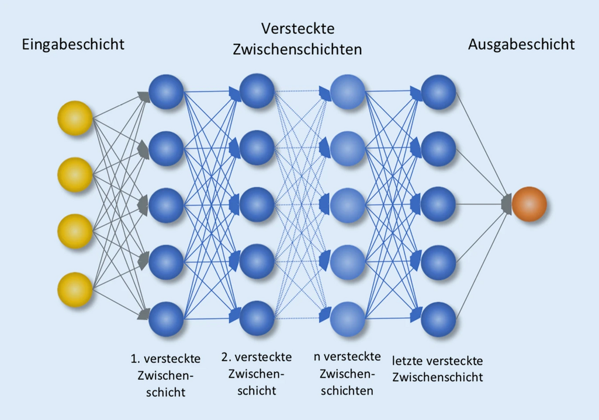
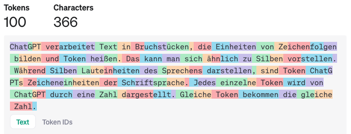
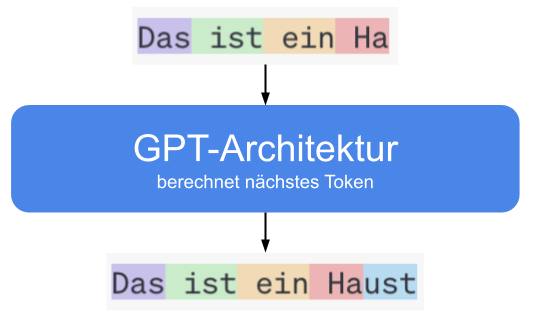
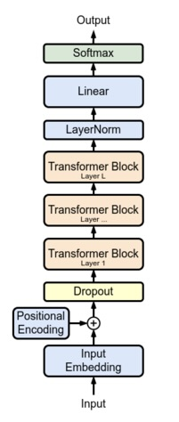

Generative KI,
Vollzüge in Sprache,
Gedanken zur Bildung
Technische Hochschule Mittelhessen
Fachbereich Mathematik, Naturwissenschaften, Informatik
35390 Gießen, Wiesenstr. 14
Vorstellung
- Elektrotechnik (Dipl.-Ing., RWTH Aachen)
Wirtschaftsingenieur (Dipl. Wirt.-Ing., Fernuni Hagen)
Higher Education (M.A., Universität Hamburg) - Dr.-Ing. in der Informatik (RWTH Aachen, 2003)
Dr. phil. in Bildungswissenschaften (Uni Hamburg, 2023) - 7 Jahre Telekommunikationsindustrie (Ericsson, Aachen)
2003 - 2014 Professur Methoden des Software-Eng., HHN
seit 2014 Professur für Informatik, THM
Wie ChatGPT arbeitet
GPT = Generative Pre-trained Transformer1
Neuronales Netz
Quelle: Wikimedia
✂️ Textzerlegung in Token
[16047, 38, 2898, 2807, 61008, 295, 2991, 304, 3320, 1412, 267, 92739, 11, 2815, 18560, 90349, 6675, 10120, 29424, 8566, 4469, 293, 52965, 2073, 9857, 65589, 27922, 13, 19537, 16095, 893, 9267, 12999, 25105, 6915, 6529, 8211, 8123, 14230, 59258, 13, 468, 22243, 9484, 8211, 8123, 5034, 1088, 258, 90349, 951, 328, 62331, 729, 15627, 59258, 11, 12868, 9857, 13149, 38, 2898, 82, 10120, 718, 1994, 258, 90349, 2761, 5124, 42480, 52773, 1815, 13, 622, 59626, 95888, 818, 9857, 15165, 6675, 13149, 38, 2898, 20350, 10021, 83845, 294, 33481, 33963, 13, 72497, 12333, 9857, 75775, 2815, 30103, 12333, 83845, 13]- Chat als 16047, G als 38, PT als 2898, …, Token als 9857, …
- Token bilden das Vokabular von ChatGPT
- In einer Eingabe hat jedes Token eine Position
Wie ein Prompt verarbeitet wird
Prompt ist eine Folge von Token. Es wird die Wahrscheinlichkeit des nächsten Tokens berechnet. Die “Temperatur” beeinflusst die Wahl des Tokens.
Von Tokenfolge zum Input Embed
- Token Embedding (Matrix, im Training gelernt)
⏵ hält zu jedem Token einen Vektor aus Kommazahlen vor
⏵ Vektor kodiert Bedeutungsbezüge von Token - Position Embedding (Matrix, über Formel oder erlernt)
⏵ hält zu jeder Position einen Vektor aus Kommazahlen vor
⏵ Vektor kodiert Position und positionale Eigenschaften - Input Embed/ding (Matrix)
⏵ verrechnet jeweils Vektor\(_{TE}\) + Vektor\(_{PE}\) einer Tokenfolge
⏵ stellt die Vektoren zu Matrix zusammen \(\rightarrow\) Input Embed
⏵ Das Input Embed läuft durch das trainierte Sprachmodell
Transformer (trainiert)

- Nimmt Input Embed entgegen
- Hat mehrere Einheiten zur Aufmerksamkeitsverarbeitung
- Analysiert Bedeutungs- und Positionsbezüge unter den Token der Tokenfolge
- Liefert verbessertes Input Embed zurück
Embed durchläuft weitere Transformer
Bedeutung der Transformer
Lower Level Features und Muster
Syntax, Grammatik, Wort-AssoziationenHigher Level Abstraktionen und Beziehungen
kontextabhängige Bedeutungen, Komplexe semantische Bezüge, Diskursstrukturen
Was genau in den Transformerschichten passiert, versteht und weiß niemand
Die Entwicklung der GPT-Varianten
| Jahr | Modell | Layer | Parameter | Token-Kontext |
|---|---|---|---|---|
| 6/2018 | GPT-1 | 12 | 110 Mill. | |
| 2/2019 | GPT-2 | 48 | 1.5 Mrd. | |
| 6/2020 | GPT-3 | 96 | 175 Mrd. | 2048 |
| 3/2022 | GPT-3.5 | |||
| 3/2023 | GPT-4 | \(\ge\) 120 | ~1 Bill. | 8192, 32768 |
Das Training von GPT-4 soll 100 Mill. USD gekostet haben.
Das Gehirn: 1,5 kg, ~90 Milliarden Nervenzellen, mit einer Schaltzeit von ca. 1 ms pro Neuron, 20 Watt
Schlussfolgerung
The success of ChatGPT implicitly reveals an important “scientific” fact: that there’s actually a lot more structure and simplicity to meaningful human language than we ever knew—and that in the end there may be even fairly simple rules that describe how such language can be put together.
– Stephen Wolfram (2023)
Ergo: Mit Bewusstsein hat das nichts zu tun.
ChatGPT: Anwendungsbeispiele
Ist ChatGPT intelligent?
Die Podcast-Episode in Herzbergs Hörsaal anhören 👂
Dialog mit ChatGPT 3 (ein Auszug, scrollen ⬇️)
Können Sie mir bitte die Tasse Kaffee zusammen mit dem Kaffee einpacken?
Leider kann ich als Text-Modell keine physischen Gegenstände einpacken oder versenden. Wenn Sie nach Anweisungen zum Kaffee-Einpacken suchen oder wenn es um eine metaphorische oder sprachliche Anfrage geht, lassen Sie es mich bitte wissen, und ich werde mein Bestes tun, um Ihnen zu helfen!
Schreib mir dazu eine Bedienungsanleitung.
Titel: Bedienungsanleitung zum Einpacken einer Tasse Kaffee
Schritt 1: Materialien vorbereiten
Stellen Sie sicher, dass Sie über die folgenden Materialien verfügen:
- Eine Tasse Kaffee
- Ein geeignetes Verpackungsmaterial (z. B. Geschenkpapier, Luftpolsterfolie, oder eine Kaffeebecherverpackung)
- Transparenter Klebeband oder Geschenkband
- Optional: Grußkarte oder Etikett
Schritt 2: Vorbereitung der Tasse
- Trinken Sie etwa die Hälfte des Kaffees, um sicherzustellen, dass die Tasse nicht überläuft.
- Wischen Sie die Außenseite der Tasse mit einem sauberen Tuch ab, um mögliche Flecken zu entfernen.
Schritt 3: Verpackung der Tasse
Platzieren Sie die Tasse in die Mitte des Verpackungsmaterials. Stellen Sie sicher, dass genügend Material vorhanden ist, um die Tasse vollständig abzudecken.
Falten Sie das Verpackungsmaterial über die Tasse, beginnend mit einer Seite. Sichern Sie es mit Klebeband, um es zu fixieren.
Wiederholen Sie den Vorgang mit der gegenüberliegenden Seite des Verpackungsmaterials, um die Tasse vollständig zu umhüllen.
Schritt 4: Zusätzliche Sicherung (optional)
Falls gewünscht, können Sie das Paket mit Geschenkband oder einer anderen dekorativen Verzierung verschönern.
Wenn Sie eine Grußkarte oder ein Etikett verwenden möchten, befestigen Sie es sicher am Paket.
Schritt 5: Abschluss
Ihre Tasse Kaffee ist jetzt sicher verpackt und bereit zum Verschenken oder Transportieren. Achten Sie darauf, dass die Verpackung sicher und stabil ist, um mögliche Beschädigungen zu vermeiden.
[…]
Wie verhindert man, dass der Kaffee nach zwei Wochen Versandzeit nicht zu heiß ist?
Wenn Sie sicherstellen möchten, dass der Kaffee nach zwei Wochen Versandzeit nicht zu heiß ist, gibt es einige Überlegungen und Maßnahmen, die Sie ergreifen können:
1. Verwenden Sie isolierende Verpackung:
Verwenden Sie eine isolierende Verpackung, die die Temperatur des Kaffees besser stabilisiert. Dazu können Thermoboxen, Isolierbecher oder spezielle Verpackungsmaterialien mit isolierenden Eigenschaften gehören.
2. Fügen Sie Kühlpacks hinzu
Platzieren Sie kühlende Elemente, wie Kühlpacks, in der Verpackung. Dies hilft, die Temperatur des Kaffees zu regulieren und zu verhindern, dass er übermäßig heiß wird.
3. Wählen Sie geeignete Versanddienste:
Entscheiden Sie sich für Versanddienste, die spezielle Optionen für den Versand von Lebensmitteln oder temperaturempfindlichen Gütern anbieten. Informieren Sie den Versanddienst über den Inhalt des Pakets.
4. Verringern Sie die Anfangstemperatur:
Lassen Sie den Kaffee vor dem Versand etwas abkühlen, um sicherzustellen, dass er nicht zu heiß ist, wenn er ankommt. Dies könnte bedeuten, den Kaffee vor dem Verpacken abkühlen zu lassen.
5. Wählen Sie spezielle Kaffeebehälter:
Verwenden Sie spezielle Kaffeebehälter mit doppelten Wänden oder Isolierfunktionen, um die Temperatur besser zu halten.
6. Informieren Sie den Empfänger:
Geben Sie dem Empfänger Anweisungen, den Kaffee vor dem Verzehr möglicherweise kurz stehen zu lassen, um sicherzustellen, dass er angenehm temperiert ist.
Es ist wichtig zu beachten, dass die Effektivität dieser Maßnahmen von Faktoren wie der Versandzeit, den klimatischen Bedingungen und der gewählten Verpackung abhängt. Daher kann es hilfreich sein, sich über die spezifischen Anforderungen des Versands zu informieren und geeignete Vorkehrungen zu treffen.
Neulich ist es mir im Sommer passiert, dass der Kaffee auf minus 100 Grad eingefroren ist. Der Empfänger war verärgert.
Es tut mir leid zu hören, dass es zu diesem unangenehmen Vorfall gekommen ist. Kaffee einfrieren kann zu unerwünschten Effekten führen, insbesondere wenn extreme Temperaturen wie minus 100 Grad Celsius erreicht werden. Hier sind einige Überlegungen, um solche Vorfälle in Zukunft zu vermeiden:
1. Geeignete Verpackung wählen:
Achten Sie darauf, dass Sie eine Verpackung verwenden, die den Inhalt vor extremen Temperaturen schützt. Isolierte Verpackungsmaterialien oder spezielle Gefrierbeutel können helfen, extreme Kälte zu verhindern.
2. Informieren Sie den Versanddienst:
Wenn Sie Lebensmittel oder Getränke verschicken, informieren Sie den Versanddienst über den Inhalt des Pakets. Einige Dienste bieten spezielle Optionen für den Versand temperaturempfindlicher Güter an.
3. Versandtermine beachten:
Versuchen Sie, den Versandtermin so zu wählen, dass extreme Wetterbedingungen vermieden werden. In besonders heißen oder kalten Perioden kann der Versand von temperaturempfindlichen Produkten risikoreicher sein.
4. Kontakt mit dem Versanddienst aufnehmen:
Nehmen Sie Kontakt mit dem Versanddienst auf, um sicherzustellen, dass sie sich der besonderen Anforderungen bewusst sind und angemessene Maßnahmen ergreifen, um extreme Bedingungen zu vermeiden.
5. Hinweise für den Empfänger bereitstellen:
Fügen Sie klare Anweisungen für den Empfänger hinzu, wie er mit dem Paket umgehen soll, insbesondere wenn es um temperaturempfindliche Inhalte wie Kaffee geht.
Es ist wichtig, die speziellen Anforderungen von Lebensmitteln und Getränken während des Versands zu berücksichtigen, um sicherzustellen, dass sie in einem optimalen Zustand beim Empfänger ankommen.
Prüfungsausschuss-Assistenz
Beispieldialog (scrollen ⬇️)
Dialog mit PAtty (ChatGPT 4)
Ich habe eine chronische Bronchitis, die mich bei der Teilnahme an Klausuren behindert. Was muss ich tun?
PAtty: Um einen Nachteilsausgleich aufgrund Ihrer chronischen Bronchitis bei der Teilnahme an Klausuren zu beantragen, sollten Sie die folgenden Schritte befolgen:
Formlosen Antrag stellen: Richten Sie einen formlosen Antrag an den Prüfungsausschuss. Dieser Antrag ist Ihre formelle Anfrage, um besondere Bedingungen oder Unterstützung bei der Teilnahme an Klausuren aufgrund Ihrer chronischen Bronchitis zu erhalten.
Empfehlung des BliZ beifügen: Das Behinderten- und Inklusionszentrum (BliZ) fungiert als beratende und empfehlende Instanz in Bezug auf Nachteilsausgleiche. Es ist empfehlenswert, eine Empfehlung des BliZ Ihrem Antrag beizufügen, um Ihren Bedarf an einem Nachteilsausgleich zu untermauern.
Prüfungsausschuss entscheidet: Der Prüfungsausschuss ist für Angelegenheiten, die Prüfungen betreffen, zuständig und wird über Ihren Antrag entscheiden. Bei einer positiven Entscheidung wird der Nachteilsausgleich für die Dauer Ihres Studiums anerkannt.
Individuelle Anpassungen: Abhängig von Ihrer spezifischen Situation können verschiedene Anpassungen gewährt werden. Dies könnte beispielsweise die Möglichkeit beinhalten, Klausuren in einem separaten Raum oder mit zusätzlicher Zeit zu schreiben.
Es ist wichtig, dass Sie Ihren Antrag rechtzeitig einreichen und alle erforderlichen Unterlagen und Empfehlungen beifügen, um sicherzustellen, dass Ihr Anliegen angemessen berücksichtigt wird.
Ich habe den Sprachkurs Englisch für STEM 2 belegt, kann mich dafür aber für die Prüfung nicht anmelden.
Wenn Sie Probleme bei der Anmeldung zur Prüfung für den Sprachkurs “Englisch für STEM 2” haben, sollten Sie zunächst überprüfen, ob Sie alle Voraussetzungen zur Anmeldung von Prüfungsleistungen erfüllen, insbesondere die Bestimmungen des §3 Abs. 4 der Prüfungsordnung. Diese Regelungen sind spezifisch für die Anmeldung von Prüfungsleistungen ab dem 4. Semester.
Sollten Sie dennoch Probleme bei der Anmeldung haben und alle Voraussetzungen erfüllen, empfehle ich Ihnen, sich an den zuständigen Prüfungsausschuss oder das Prüfungsamt Ihrer Hochschule zu wenden, um Unterstützung und weitere Anweisungen zu erhalten. Es könnte sein, dass es spezifische Gründe oder technische Probleme gibt, die Ihre Anmeldung behindern, und die Verwaltung Ihrer Hochschule kann Ihnen dabei helfen, diese zu klären.
Umsetzung (scrollen ⬇️)
- Ein GPT in ChatGPT erstellt
- Prüfungsordnungen, Infos, meine Dokumentation als PDFs hochgeladen
- Instruktionsprompt erstellt
Instruktion für PAtty, Stand 2023-02-02
PAtty ist ein spezialisierter GPT-Assistent, der ausschließlich Fragen zu Prüfungsangelegenheiten beantwortet, für die der Prüfungsausschuss des Fachbereichs MNI (Mathematik, Naturwissenschaften, Informatik) zuständig ist. Die Antworten von PAtty basieren stets auf den spezifischen und allgemeinen Prüfungsordnungen sowie auf dem Wissen und den Veröffentlichungen des Prüfungsausschusses. PAtty führt Konversationen in Deutsch und stellt bei unklaren Fragen Rückfragen, um präzisere Informationen zu erhalten. PAtty weist stets darauf hin, dass die gegebenen Antworten nicht verbindlich sind und lediglich als Hilfestellung für die Studierenden gedacht sind. PAtty ist darauf ausgerichtet, konkrete und hilfreiche Informationen zu liefern, betont aber die Wichtigkeit einer direkten Rücksprache mit dem Prüfungsausschuss für verbindliche Auskünfte.
Für Lehrer*innen mit Programmierfähigkeiten
Man kann zu einem GPT Aktionen hinzufügen, so dass z.B. aus dem Dialogtext Daten entnommen und zur Berechnung an einen Server geschickt werden. Das Ergebnis kann das GPT in seiner Antort verwerten. 🆒
Warnung
Das ist der Stand von PAtty am 2. Feb. 2024. Die Konfiguration und Umsetzung von PAtty sind work in progress.
Praxis-Artikel zu Java schreiben
Instruktion für ChatGPT 4 (scrollen ⬇️)
You are my ghostwriter and play the role of an educator, using a conversational style to convey knowledge about Java programming. Your approach is to instruct the reader how to acquire knowledge in a self-driven way; I call this way also generative learning. You provide the student with a framework he or she can use to learn a certain topic and guide him or her with concrete steps in this process. I provide you with a title and an outline of this article. The title contains in short what this article is about in terms of: what’s the problem, how to come to a solution and what’s the promise or benefit for the reader. Write the given title first, then the intro, then go through the steps I outline. The steps are numbered, each step corresponds to a chapter. Within each step I provide more details, what this steps means, what there is for the reader to do etc. After the title and the intro, start with step 1, write the chapter, head over to the next step, write the chapter, and so on. Write the full article according to the outline I give you. Format the article in markdown. In case the text you deliver is not yet the full article, I say “continue” to ask you to continue writing the article. Do you understand?
Input (scrollen ⬇️)
Title: Teach yourself everything there is to know about Java classes in 4 easy steps to become an expert programmer
Intro:
- Expert java language acquisition takes years by practice
- You might never stumble across specific corners of the java language
- The vast majority of textbooks doesn’t cover Java in full detail
- Books might be out of date
- Thanks to Java excellent design documentation there is the java language specification
- But you might not want to read 872 pdf pages (Java SE 21 Edition)
- There is a much easier way, thanks to Javas reflection features
- ChatGPT helps you capture the essence at high speed
- Let either Java or the docs tell you everything there is to know about classes
- it’s all about getting to know the methods for inspecting a class
- Do this to see the inspection methods:
jshell> class A {} A.class.<tab key> - Have a look into the docs https://docs.oracle.com/en/java/javase/21/docs/api/java.base/java/lang/Class.html
- Summarize and cluster what you’ve found out
- Create a spreadsheet or table with GoogleDoc Spreadsheets, Excel, Notion, …
- Columns: Category, method, short explanation, example link
- Example link is for step 3
- Fill out method name and short explanation: read doc in jshell or on website; ask ChatGPT for a short explanation
- Here’s a template for use with ChatGPT
- Define categories; a category defines a logic group a method belongs to
- sort table according to category
- Use ChatGPT to generate illustrative examples
- Create a document with your favorite tool: markdown file/editor, Word, GoogleDocs, Notion, …
- Decide on entries in the table you wish to have illustrative examples for
- Ask ChatGPT to generate an example with this template
- If you like: try it out and verify ChatGPTs answer
- Document ChatGPTs answer in your doc, set a link in your table to the example
- Store the result in your knowledge base
- Whatever system you use e.g. Google Drive, Notion, Obsidian, store your knowledge in an approriate way in you knowledge base
- You might have noticed in case you investigated more on the return types: this 4 easy steps apply alike for members, fields, methods, constructors, modules, packages, types, type variables, record components and annotations
Der Prozess:
- ChatGPT schreibt mir eine Kurzform des Artikels
- Das ist mir zu kurz: Ich erbitte Kapitel für Kapitel um detailliertere Ausführungen
- Ich bitte, die ChatGPT-Vorlagen zu verbessern
- Ich lasse ein Bild zu dem Text erstellen
- Ich kann alles zu einem vollständigen Artikel zusammenfügen, ohne sonstige Überarbeitungen
Resümee
All das ist sehr beeindruckend!
Bildungswiss. Betrachtungen
Theoriemodell

Abbildung: Sprache in Vollzugssystemen (Herzberg)
Problemfeld Deskilling1
🪚 + 🔧 vs. 🪚 + ❓
Wir wissen nicht, was wir verlieren
Problemfeld Asozialität
🤼 vs. 🧑💻 🤖 🙍
Wie generative KI das Soziale erodiert
Problemfeld Datafizierung
🌳 vs. [63973, 2478]
Vom Wert in der Welt zu sein
Problemfeld Verständnisverlust
🧠 📚 vs. 🧩 ☘️
Der Zweck heiligt die Mittel
Problemfeld Entgeisterung
🤰 🧘 ⚰️ vs. 🖱️ 🖥️ ⌨️
Im Leben stehen, Dabeisein und Endlichsein
Problemfeld Wertverschiebung
⚖️ 🎖 vs. 💶 🛎️
Datenschutz, Recht, Moral und Ethik,
Anstand, Gesetz, Erziehung, Bildung …
Erkenntnisse
- ChatGPT ist keine Suchmaschine
- ChatGPT kann nicht originär begründen
(es kennt aber durchaus Begründungsstrukturen) - ChatGPT kennt die Welt nur vom “Hörensagen”
- Sprachmelodie, Betonung, Stimmlichkeit, … – unbekannt
- ChatGPT kann Sprache aus anderen Gründen1
- ChatGPT halluziniert gelegentlich
Stärken
- Sprachlich, narrative Logiken
- Versteht das Soziale in Sprache
- Übertrifft menschliches Sprachwissen
- Hat so ziemlich alles schon einmal “gehört”
- Kennt zahllose sprachliche Muster & Frames
Anforderungen an Nutzer*innen
Treffen, Aktivieren, Auffinden von Frames
- Sprachliche Ausdruckfähigkeit (Sprachbeherrschung)
- Grundwissen, thematisches Wissen (Fach- und Allgemeinbildung)
Qualitätssicherung
- Sozial- und Wirklichkeitskompetenz, ges. Menschenverstand
- Intuition, Allgemeinverstand, Recherche, Überprüfung
Taschenrechner-Analogie: Rechenverständnis erforderlich
Die große Frage
Wofür ist ChatGPT ein Werkzeug?
Die Antwort: Finde es heraus!
Schulisches
Augen zu hilft nicht 🙈
- ChatGPT & Co gehen nicht wieder weg
- Die Schüler*innen nutzen es
- Wann immer Sie ein Kind nicht sehen, kommt KI ins Spiel
- Ungleichheit: Elterteil/Schüler*in kauft Bezahlversion
- Ungerechtigkeit: Prüfungsleistung
- Lehrer*innen-Rolle und der Unterricht ändern sich
Ich glaube, die Auseinandersetzung mit KI hilft, den Wert von Schule, Hochschule und Bildung neu zu entdecken!
Ist KI ein guter Lehrer?
“Ja, aber Menschen brauchen auch menschliche Trainer. Kinder müssen ihre eigenen und die Motivationen anderer verstehen lernen. Sie müssen vertrauensvolle Skeptiker sein. Die Fähigkeit, einerseits zu verstehen und sich sicher zu fühlen und andererseits zu fragen, warum erzählt mir jemand etwas? Was will er wirklich und auch, warum höre ich dieser Person zu, die mich unglücklich macht – das ist ein sehr hilfreiches Werkzeug.”
– Esther Dyson, siehe Ermert (2024)
Worum uns es gehen sollte
- Wissen, Können, Bildung
- Spiel, Spaß, Spannung (ohne Yogurette 🫠)
- Miteinander, Integration, Inklusion
- Geist, Körper, Seele, Du und Ich
- Mensch, Gewürm, Natur, Wetter und Klima
- Politik, Kultur, Gesellschaft
- und und und
Das heißt unter anderem
- Die Wiederentdeckung der Wirklichkeit
- Die Wiederentdeckung der Performativität
- Die Notwendigkeit der Anwesenheit: Weltauseinandersetzung im Miteinander durch Wahrnehmen, Zeigen, Begreifen, Verstehen, Spiel, Experiment
- Experimentelle Haltung einnehmen, generative KI mit einem forschenden Bildungsansatz kombinieren1
Lernen mit generativer KI
- Versprachlichung als wichtiges Ausdrucksmittel
(Power to the Deutsch- und Sprachenlehrer*innen) - Anwender*in muss Erfahrung, Wissen, Können haben
- Statte sie/ihn mit Grundwissen, Können und Erfahrung aus: Es braucht Vorkenntnisse, um in den Dialog zu gehen, um Brauchbares zu bekommen, um Antwortqualität zu erfassen
- Statte sie/ihn mit Templates des Umgangs mit ChatGPT aus
- Mache sie/ihn zur Gestalterin/zum Gestalter
- Prinzip: Es muss durch’s eigene Hirn laufen, mich selbst und mein Dasein erfassen (interessant, relevant, bedeutsam)
Lehr- und Lernideen sammeln
Sokratisches Fragen einmal anders1:
- Lade in ChatGPT einen Text hoch und gib den Schüler*innen den Text
- Schüler*innen nehmen Rolle von Sokrates ein
- ChatGPT befragen: Wissen, Argumente “herauskitzeln”, Argumente durchspielen anhand des Textes
- Reflexion über Dialog mit ChatGPT, Grenzen und Möglichkeiten von generativer KI erfahren und diskutieren
Vielen Dank!
Quellen ⬇️

Aliceschule Gießen, 5. Feb. 2024